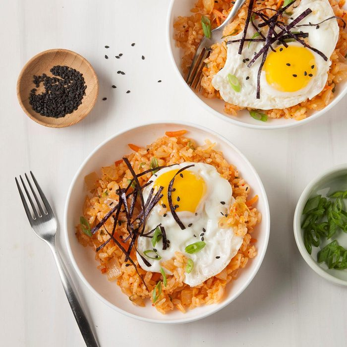

Kimchi Fried Rice

Forget ordinary fried rice! Kimchi fried rice is just as easy, but it packs a flavorful punch.
This is a great use for leftovers, too. You can freeze the fried rice for up to three months.
When cooking your defrosted rice, add a little extra soy sauce so it doesn't dry out
Ingredients
- 2 tablespoons canola oil, divided
- 1 small onion, chopped
- 1 cup kimchi, coarsely chopped
- 1/2 cup matchstick carrots
- 1/4 cup kimchi juice
- 1 garlic cloves, minced
- 1 teaspoon minced fresh gingerroot
- 3 cups leftover short grain rice
- 2 green onions, thinly sliced
- 3 teaspoons soy sauce
- 1 teaspoon sesame oil
- 4 large eggs
- Optional toppings: Sliced nori, green onions and black sesame seeds
Steps
- In large skillet, heat 1 tablespoon canola oil over medium-high heat. Add onion; cook and stir until tender, 2-4 minutes. Add kimchi, carrots, kimchi juice, garlic and ginger; cook 2 minutes longer. Add rice, green onions, soy sauce and sesame oil; heat through, stirring frequently.
- In another large skillet, heat remaining 1 tablespoon canola oil over medium-high heat. Break eggs, 1 at a time, into pan; reduce heat to low. Cook to desired doneness, turning after whites are set if desired. Serve over rice. If desired, sprinkle with with nori, green onions and sesame seeds.